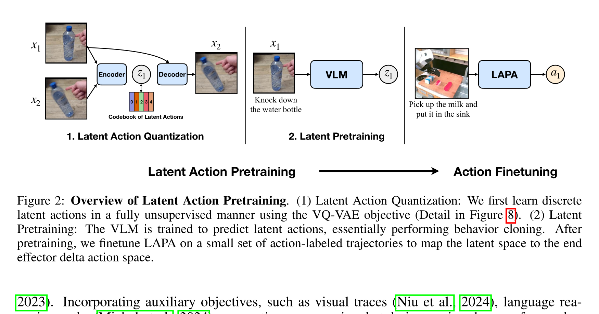

Latent Action Pretraining from Videos
Seonghyeon Ye 等 · ICLR 2025 · arXiv:2410.11758 v2 · Zotero BBN57LYY
LAPA 先从相邻视频帧中无监督发现离散“变化 token”，再让 VLM 根据当前画面和语言预测这些 latent action，最后用少量带机器人动作的数据把 latent head 替换成真实 action head。它把无动作标签视频变成 VLA 预训练信号。
§1 Introduction：为什么机器人策略的数据瓶颈不是“视频少”，而是“动作标签少”
大规模 VLA 通常把预训练 VLM 接到机器人动作头，再用跨机器人遥操作轨迹做行为克隆。这条路线能学会语言和视觉泛化，却把规模上限绑在昂贵的机器人硬件与人工遥操作上。互联网视频恰好相反：人类与物体交互极其丰富，但没有末端位姿、关节角或力矩标签，而且人的身体与机器人本体并不一致。LAPA 的问题因此不是“怎样再做一个视频编码器”，而是能否先从视频变化中制造 action-like 监督，再用少量机器人数据完成最后的物理接地。
展开原文 · 核心主张
“pretraining Vision-Language-Action models without ground-truth robot action labels”
论文把困难拆成两个正交问题：缺动作标签由 latent action quantization 解决；human–robot embodiment gap 由最终 action finetuning 解决。这个拆分很重要，因为它没有声称 latent code 天生就是机器人动作，也没有声称完全摆脱机器人数据。
§2 Related Work：LAPA 相对四条前驱路线到底改了什么
上一节说明数据矛盾，但仅做视频预训练并不足以产生控制。相关工作真正的分界线是：视频信息进入策略时，究竟只提供视觉表征、提供显式未来计划，还是直接提供可预测的代理动作标签。
| Action-labeled VLA | RT-2、OpenVLA 等用真实机器人动作监督，部署接口直接，但预训练数据规模受遥操作约束。LAPA 只在最后阶段使用这类数据。 |
| 视频表征预训练 | 从 Ego4D 等人类视频学习视觉 encoder，能改善物体与交互理解，却没有回答策略头应预测什么。LAPA 给每个片段生成离散 action-like 标签。 |
| 视频生成 / IDM 级联 | UniPi、AVDC 一类先生成视觉轨迹，再用 inverse dynamics 取回动作；可解释但部署时存在两阶段误差和延迟。LAPA 把 latent prediction 当预训练任务，最终仍是单体 VLA。 |
| Latent action | Genie 用无标签游戏视频发现可交互按钮，目标是生成环境；LAPA 借用 VQ 式动作发现，但用它自动标注真实人类/机器人视频，并通过小规模动作微调迁移到连续操作。 |
§3 互联网视频为什么不能直接训练 VLA
§4 三阶段，不要把 latent action 当真动作

1. 先学变化的离散字典
训练 inverse-style encoder 与 future decoder，让 codebook 必须解释 $x_t\to x_{t+H}$。
输入是什么：当前任务提供的原始观测、指令、机器人状态或训练数据。先明确这些输入，才能判断后面的结论是否用了部署时拿不到的信息。
这一步究竟做什么：训练 inverse-style encoder 与 future decoder，让 codebook 必须解释 $x_t\to x_{t+H}$。
输出到哪里：经过本步骤处理、含义更明确的中间结果。这个结果会交给下一步“用 latent token 预训练 VLA”继续处理。
为什么不能省略：它把未经处理的原始问题变成后续模块可以计算的输入，是整条链路的起点。
2. 用 latent token 预训练 VLA
把所有视频自动贴上 $z_t$，让 VLM 从图像+语言预测它。
输入是什么：来自上一步“先学变化的离散字典”的产物：经过本步骤处理、含义更明确的中间结果。本步骤还会按论文设置读取当前条件、时间步或训练信号。
这一步究竟做什么：本步骤执行“用 latent token 预训练 VLA”。具体来说，把所有视频自动贴上 $z_t$，让 VLM 从图像+语言预测它。 模型从相同起点产生候选未来，后续模块再检查这些未来是否符合条件、物理规律或动作需要。
输出到哪里：一组比原始输入更紧凑的内部特征；它不是最终动作或画面。这个结果会交给下一步“少量真动作完成 grounding”继续处理。
为什么不能省略：模型不能高效地直接在所有原始像素和长序列上推理；这一步把信息压成后续模块能处理、比较和复用的形式。
3. 少量真动作完成 grounding
换掉 latent head，在目标本体数据上学 delta end-effector / joint action。
输入是什么：来自上一步“用 latent token 预训练 VLA”的产物：一组比原始输入更紧凑的内部特征；它不是最终动作或画面。本步骤还会按论文设置读取当前条件、时间步或训练信号。
这一步究竟做什么：换掉 latent head，在目标本体数据上学 delta end-effector / joint action。
输出到哪里：一组比原始输入更紧凑的内部特征；它不是最终动作或画面。这是图中这条链路的最终产物，随后会进入真实执行、模型更新或指标评测。
为什么不能省略：它把前面得到的内部结果落实为可执行动作、可训练模型或可解释指标，完成从方法到结果的最后一步。
§5 动作量化模型：受约束的“未来差分编码”
- $E$
- 同时看现在和未来，提取导致变化的紧凑表征。
- $Q$
- NSVQ/VQ codebook 将连续变化变成 VLM 易预测的离散 token 序列。
- $D$
- 只能靠当前帧与 $z_t$ 重建未来，迫使 token 携带可控变化而非任意视觉特征。
视频差分不只包含人的/机器人的动作，还包含相机运动、背景变化、不可控物体动力学。LAPA 的分析也发现人类视频 latent 会编码视角变化；“能解释未来”不自动等于“可执行控制”。
§6 Latent Pretraining：本质是代理动作行为克隆
上一节只得到一个能解释帧间变化的 codebook；接下来必须证明当前观测与语言能够预测这些 code，否则它仍只是一个离线压缩器。量化 encoder 因而被当作自动标签器，VLM 则学习从现在推断“下一段变化应该是什么”。
- $z_{t,j}$
- 第 $j$ 个 latent action token，由量化 encoder 根据当前帧与未来帧离线生成。
- $x_t,l$
- 策略实际可见的当前图像与语言任务；未来帧不再输入，防止训练时偷看答案。
- $z_{t,<j}$
- 已预测的前缀，使多个离散 code 可以像语言 token 一样自回归输出。
- $-\log\pi_\theta$
- 交叉熵行为克隆目标：让 VLM 复现视频中观察到的变化类别，而非直接回归某个本体的关节坐标。
§7 Action Finetuning：latent head 会被丢弃
LAPA 不是把 codebook token 查表成固定机器人动作。正式 fine-tuning 时丢弃 latent action MLP，换成真实动作 head，并在少量 action-labeled trajectories 上微调主干。迁移发生在 VLM 表征与决策先验，而不是一个永久的动作词典。
| 预训练输出 | 离散 $z_t$；跨数据集/本体的变化语义 |
| 微调输出 | 目标本体的连续或离散真实动作 |
| 保留 | 视觉—语言—变化关系的主干参数 |
| 不保证 | 同一个 latent token 在所有本体上有唯一物理动作 |
§8 实验、归因与复现边界
上一节完成了从代理动作到真实动作的桥接；实验必须排除“只是模型更大或机器人数据更多”。因此要同时看无动作预训练基线、不同视频来源、动作微调比例，以及真实任务中的语言/物体/语义泛化。
复现时最先核对的五个变量
- 码本大小、latent 序列长度与 NSVQ code 使用率，防止 codebook collapse。
- 帧间隔 $H$：太短只编码相机抖动，太长则把多个动作混成一个 token。
- 量化 decoder 是否对当前帧 patch stop-gradient，以及该操作对表征坍缩的影响。
- 人类视频、机器人无动作视频与目标动作轨迹的采样比例。
- 动作微调时丢弃哪些模块、冻结哪些参数，避免把“全量重训”误称为 latent transfer。
§9 对 WAM 的意义
LAPA 把“未标动作的视频”变成可规模化的 action-like supervision，适合给 WAM/VLA 做预训练。但真正的 WAM 还需要学习 $p(x_{t+1}\mid x_t,a_t)$ 的可干预一致性；LAPA 的量化 decoder 可用于分析 rollout，却不是部署时的完整世界模型。
Genie 也用 VQ 式 latent action，但目标是生成可交互环境；LAPA 继承相似动作发现思路，把它改造成 VLA 预训练与真实机器人迁移方案。